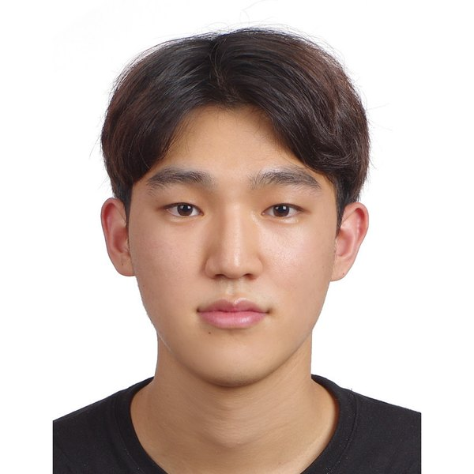

Integrated B.S./M.S. student in Computer Science and Engineering at Korea University, advised by Prof. Young Geun Kim. Currently an AI research engineering intern on the Algorithm team at FuriosaAI. Previously at NAVER Cloud, where I worked on the HyperCLOVA X models.
I work on making large language models cheaper to train and to run — model merging as a way to post-train in parallel, and hardware-aware pruning as a way to fit transformers onto devices.
* Equal contribution † Corresponding author
Text Capability Loss in Vision-Language Adaptation: An Attention-Sink Diagnosis
Extended version of the NeurIPS 2025 Workshop paper below.
Decentralized Instruction Tuning: Conflict-Aware Splitting and Weight Merging
Under Review
Merging RLVR-Trained Experts via Policy-Shift-Guided Spectral Alignment
Workshops
Technical Reports
Writing
AI Research Engineering Intern
Sep 2026 – PresentAlgorithm Team, FuriosaAI, Seoul
Research & Engineering Intern
Sep 2025 – Mar 2026NAVER Cloud, Seongnam
Worked on Korea's government-funded sovereign foundation model initiative (독자 파운데이션 모델 프로젝트), building LLM training and evaluation pipelines for instruction tuning and model merging.
Undergraduate Research Intern
Feb 2025 – Feb 2026Intelligent Computer Architecture & Systems Lab, Korea University
Hardware-aware transformer optimization and structured pruning for on-device NLP inference.
Reviewer
2026OPT 2026: Optimization for Machine Learning, NeurIPS 2026 Workshop
Integrated B.S./M.S., Computer Science and Engineering
Sep 2025 – Aug 2027Korea University · Advisor: Prof. Young Geun Kim
Exchange Student, Computer Science
Sep 2023 – Feb 2024University of Tübingen, Germany
B.S., Computer Science and Engineering
Mar 2022 – Feb 2026Korea University · Admitted via the School of Interdisciplinary Studies · GPA 4.2 / 4.5
Graduate Merit-Based Scholarship
Feb 2026 – Aug 2027Korea University · 50% tuition, all semesters
Academic Scholarship
2025Woonhae Scholarship Foundation · full tuition for one academic year